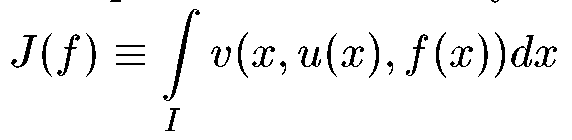
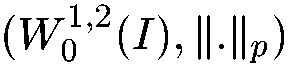
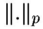
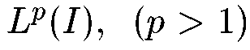

Электронный журнал РУСИКОН
 Общая информация
Общая информация
Российский архив по системам и управлению (РУСИКОН) предоставляет возможность
электронной экспресс-публикации научных работ ограниченного объема в области
теории систем и теории управления. Как публикация, так и доступ к опубликованным
материалам бесплатны. Авторы могут посылать свои статьи непосредственно или
через членов РНКАУ. В последнем случае работа будет отмечена:
"Представлено членом Национального комитета по автоматическому управлению <имя>".
Как правило, работа публикуется в течение недели с момента присылки текста.
Как автор, так и лицо, представившее работу, будут оповещены по e-mail не позже, чем
на следующий день после публикации.
Информация для авторов
Файл со статьей в формате .ps , .doc или .pdf (желательно, заархивированный) следует
послать по адресу info@rusycon.ru .
Размер файла не должен превышать 600 КБайт, что соответствует 5-6 обычным страницам
формата А4 с 1-2 небольшими рисунками. Оформление статьи должно соответствовать
стилю журнала ИФАК "Automatica": за названием следует фамилия, место работы и
адреса авторов (включая факс и адрес электронной почты), а также 4 ключевых слова.
Аннотация на двух языках - русском и английском в виде текстового файла
(объемом до 2 КБ, с возможным использованием символов языка TeX)
должны быть послана отдельно. В этом же файле привести перевод названия статьи на английский язык.
Как ссылаться на публикацию в РУСИКОН
Пример:
1. Ivanov I.I. Philosophy of science. Electronic Journal RUSYCON,
25.08.2001 (www.rusycon.ru/journal)
2. Иванов И.И. Наука философии. Электронный журнал РУСИКОН,
25.09.2001 (www.rusycon.ru/journal)
10 февраля 2010 г.
 |
Фуртат И.Б. (Астраханский государственный технический университет, Россия) |
| | Децентрализованное субоптимальное управление по быстродействию многосвязными объектами |
| |
В работе рассмотрено децентрализованное робастное субоптимальное управление
параметрически и функционально неопределенным многосвязным объектом.
Предполагается, что доступны измерению только скалярные выходы локальных
подсистем, каждые из которых используются только в своих подсистемах.
Цель управления состоит в переводе объекта из начального положения в конечное
за минимальное время с заданной точностью.
|
| | Полный текст (PDF, 288 Kb) |
24 марта 2004 г.
|
М.С. Ананьевский (Санкт-Петербургский государственный университет, Россия) |
| | Метод скоростного градиента в задаче управления квантовомеханической моделью двухатомной молекулы |
| |
В работе исследуется задача управления наблюдаемыми для
двухатомной молекулы при конечномерном квантовом описании.
Применением метода скоростного градиента к квантовому описанию
молекулы получен новый алгоритм управления. Доказано, что при
принадлежности начальных данных системы достаточно широкой области
фазового пространства, предложенный алгоритм выполняет цель
управления. Показано, что цель управления может быть достигнута
при помощи сколь угодно малого управляющего воздействия. Приведены
результаты численного моделирования динамики молекулы HF,
показывающие эффективность предложенного алгоритма. |
| | Полный текст (Zipped PS, 125 Kb) |
20 октября 2003 г.
|
Э. Шоель, А. Амман, Я. Шлеснер, Я. Ункелвах, В.Джуст (Германия) |
| | Управление нелинейными колебаниями тока в полупроводниковых гетероструктурах |
| |
Изучается синхронизация хаотических пространственно-временных
структур (паттернов) в пространственно распределенных моделях полупроводников при помощи обратной связи с запаздыванием.
Сравниваются различные способы управления: управление с диагональной
матрицей обратных связей, глобальное управление а также их комбинация. Иссследуются две модели полупроводниковых
наноструктур,
представляющие интерес в настоящее время: (i) сверхрешетка, (ii) двухбарьерный диод с резонансным туннелированием.
|
| | Полный текст (GZipped PS, 540 Kb) |
|
А. Амман, Э. Шоель, Н. Баба, В. Джуст (Германия) |
| | Управление хаосом запаздывающей обратной связью с пространственно-временной фильтрацией |
| |
Обратная связь с запаздыванием используется для придания устойчивости периодическим во времени структурам (паттернам),
возникающим в моделях типа "реакция-диффузия" с глобальным взаимодействием. Показано, что качество управления повышается
на несколько порядков с помощью подходящих фильтров и связей, которые основываются на собственных модах Флоке неустойчивых
орбит. Предложено объяснение механизма, приводящего к улучшению качества управления на основе фазовой синхронизации между
желаемым процессом и процессом в контуре управления.
|
| | Полный текст (GZipped PS, 492 Kb) |
13 января 2003 г.
|
С. Лареш, А. Адду (Университет Мохаммеда I, Марокко) |
| | Достаточные условия минимума в эллиптической задаче оптимального управления в пространстве Соболева W01,2(I), где I - ограниченный интервал в R1 |
| |
Рассматривается задача локальной минимизации недифференцируемого по Фреше
функционала Гато  на пространстве Соболева , где u - решение задачи Дирихле
для линейного равномерно эллиптического оператора с неоднородным членом
f, а  - норма, порожденная метрическим пространством .
Используются результаты Сухинина (1991) по расширению дифференцируемости по Фреше
(т.н. подход тейлоровских отображений).
Предлагаются различные варианты условий, гарантирующих что критическая точка
функционала является строгим локальным минимумом.
Приводится пример задачи управления, в которой классическая дифференцируемость по Фреше
не может быть использована, а подход тейлоровских отображений работает.
|
| | Полный текст (PS, 247 Kb) |
15 декабря 2002 г.
|
А.А. Бобцов |
| | Алгоритм робастного управления неопределенным объектом без измерения производных регулируемой переменной |
| |
Предложена схема робастного управления неопределенным объектом без измерения производных регулируемой переменной (выхода
объекта управления), обеспечивающая при заданных в статье допущениях на объект управления, ограниченность регулируемой
переменной и сходимость ее к некоторому ограниченному инвариантному множеству. Процедура синтеза базируется на известном
подходе Морза, который в литературе получил название "алгоритм адаптации высокого порядка". В отличие от алгоритма адаптации
высокого порядка, предлагаемая схема робастного управления позволяет синтезировать менее громоздкие по размерности
регуляторы. В статье приведены результаты компьютерного моделирования, иллюстрирующие работоспособность предлагаемой схемы
управления.
|
| | Полный текст (PDF, 235 Kb) |
14 февраля 2002 г.
|
С.Б. Пашутин |
| | Хаос рынка и феномены устойчивости бизнеса |
| |
В данной работе выдвигается тезис об универсальности механизмов хаоса и
упорядоченного состояния, затрагивающих все явления окружающего нас мира.
Различие между устойчивостью и непредсказуемым, апериодичным состоянием системы
обусловлено масштабами и системой координат, в которых происходят те или иные
процессы. Предполагается, что состояние равновесия и нестабильного поведения системы
является фазами одного и того же процесса и зависит от уровня обеспечения
ресурсами каждого из ее элементов. Представления о феномене хаоса могут быть
использованы в прикладном аспекте, в частности для рационального решения
проблемы обеспечения устойчивости компании в условиях обостряющейся конкуренции
на рынке. Например, при прогнозировании возможного появления очагов кризиса.
Или при оптимизации бизнес-процессов, позволяющих достичь максимальной
производительности или результативности той или иной фирмы при минимуме
затраченных на это усилий.
|
| | Полный текст (PDF, 159 Kb) |
3 января 2002 г.
|
Е.В. Никульчев (Московская государственная академия приборостроения и информатики) |
| | Применение методов дифференциальной геометрии к задачам управления в сложных системах |
| |
В работе рассмотрены математические методы и модели обеспечения качества
управления нелинейными динамическими объектами с учетом заданных функционалов
качества ограничений. Разработанный математический аппарат основан на методах
теории конечных групп и алгебр Ли.
|
| | Полный текст (PDF, 162 Kb) |
5 ноября 2001 г.
|
А.Л. Фрадков (Институт проблем машиноведения РАН, Санкт-Петербург) |
| | Библиография по управлению хаосом (1997 - 2000) |
| |
Библиография содержит около 700 ссылок на работы, посвященные управлению
хаотическими системами и опубликованные в рецензируемых журналах в 1997-2000гг.
(по данным Science Citation Index(www.webofscience.com)) , а также
перечень книг, обзоров, специальных выпусков журналов и трудов конференций
по данной тематике. Работы классифицированы по задачам и методам их решения,
а также по областям приложений.
|
| | Полный текст (HTML, 157 Kb) |
29 ноября 2000 г.
|
Д.В. Ефимов (С.-Петербургский гос. электротехнический университет / Институт проблем машиноведения РАН) |
| | "Гиперустойчивость и устойчивость от входа к вектору состояния" |
| |
Показано, что при определенных не обременительных условиях из гиперустойчивости нелинейной системы
следует ее устойчивость от входа к вектору состояния.
|
| | Полный текст (PS.ZIP, 676 Kb) |
24 сентября 2000 г.
|
Г.А. Леонов (С.-Петербургский гос. университет) |
| | "О стабилизационной проблеме Брокетта" |
| | Представлены 3 теоремы, связанные со стабилизационной
проблемой Брокетта
(R.Brockett. A stabilization problem. В кн.: Open Problems in
Mathematical Systems and Control Theory. Springer-Verlag, 1999.)
для 2-мерной, 3-мерной и n-мерной линейных систем. |
| | Реферат (TeX, 3 Kb или PostScript, 38 Kb) |
| | Полный текст на англ. языке (TeX, 11 Kb или PostScript, 57 Kb) |
|
Г.А. Леонов (С.-Петербургский гос. университет) |
| | "Функции Ляпунова в оценках размерности аттракторов динамических систем"
|
| |
Статья является текстом доклада, прочитанного автором на
Рохлинском мемориале в августе 1999 года. В ней содержится обзор
результатов по оценках размерности аттракторов с помощью функций
Ляпунова.
На этом пути оказалось возможным получить очень простые формулы
для вычсления ляпуновской размерности аттракторов Хенона и
Лоренца.
|
| | Реферат (TeX, 2 Kb или PostScript, 30 Kb) |
| | Полный текст на англ. языке (TeX, 34 Kb или PostScript, 135 Kb) |
|
А.Л. Фрадков (Институт проблем машиноведения РАН),
В.О. Никифоров (Санкт-Петербургский государственный институт точной механики и оптики)
|
| | "Интернет-технологии научной работы" |
| | Статья является расширенной версией доклада
авторов на Конференции молодых ученых по навигации и управлению движением
(С.-Петербург, 2000 г.)
Статья содержит перечень некоторых приемов использования сети Интернет
в научной работе в области техники и систем управления.
Ее можно использовать также в качестве путеводителя по сетевой базе
данных РУСИКОН ("Российский архив по системам и управлению" - www.rusycon.ru).
|
| | Текст статьи (HTML-формат) |
Вернуться на главную
страницу РУСИКОН